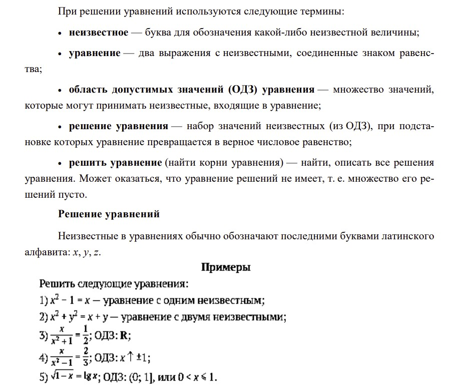
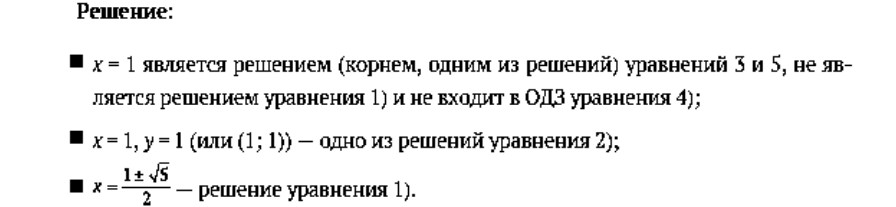
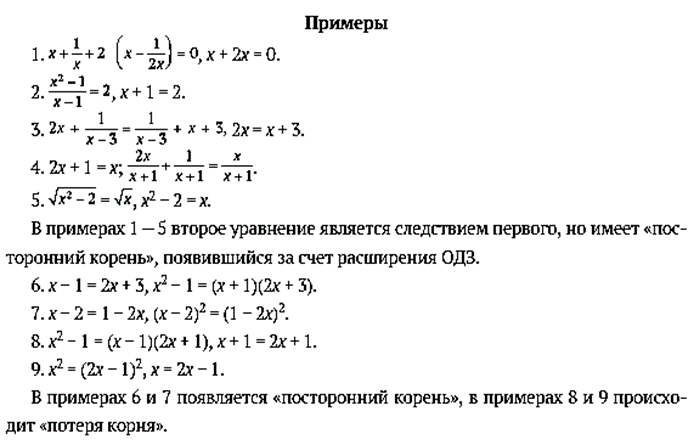
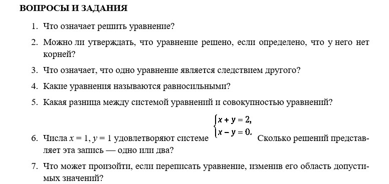

Как использовать математический язык при решении уравнений?
1. Язык теории множеств.Уравнение будем обозначать буквой E (от Equation); множество решений уравнения E — R(E) = R (от Root); область допустимых значений (ОДЗ) уравнения E — D(E) = D (от Domain). По определению R(E) ⊂ D(E) — корни уравнения должны входить в его ОДЗ.
1) Если уравнение E не имеет решений, то R(E) = ⌀ — пустое множество.
2) Если уравнение E имеет единственное решение, то множество R(E) состоит из одного элемента (одного числа, если в уравнении одно числовое неизвестное).
3) Уравнение E2 является следствием уравнения E1, если R(E2) ⊃ R(E1), т. е. каждое решение уравнения E1 является решением уравнения E2
4) Уравнение E2 равносильно уравнению E1, если R(E2) = R(E1), т. е. множества решений E1 и E2 совпадают. Равенство R(E1) = R(E2) эквивалентно двум включениям R(E1) ⊂ R(E2) и R(E2) ⊂ R(E1). Это дает возможность переформулировать определение равносильности. Уравнения E1 и E2 равносильны, если каждое решение уравнения E1 является решением уравнения E2 и каждое решение уравнения E2 является решением уравнения E
5) Если уравнение E3 является следствием уравнения E2, а уравнение E2 — следствием уравнения E1, то уравнение E3 является следствием уравнения E1. При этом: R(E1) ⊂ R(E2) ⊂ R(E3). Аналогичное утверждение верно и для понятия равносильности уравнений.
6) Обычный путь решения уравнения состоит в построении такой цепочки следствий, последнее уравнение которой мы решать умеем. После этого либо выполняют проверку, либо выясняют, нельзя ли сделать «обратный ход» в построенной цепочке, т. е. будут ли уравнения цепочки равносильны друг другу. Если при переходе от уравнения E1 к уравнению E2 оказалось, что множество R(E2) больше множества R(E1), т. е. R(E1) ⊂ R(E2), то говорят, что появились «посторонние корни», которые надо отсеять. Если не все элементы множества R(E1) вошли в R(E2), то говорят, что произошла «потеря корней». Разумеется, в этом случае уравнение E2 не является следствием уравнения E1.
Язык теории множеств
E — уравнение;
R (E) — множество решений уравнения;
D (E) — область допустимых значений.
Если в уравнение E входит одно неизвестное, значениями которого являются действительные числа, то множество его корней R(E) является подмножеством R. Общепринятая запись множества перечислением его элементов в фигурных скобках часто оказывается громоздкой, и можно использовать любую другую форму записи, лишь бы она была точной и понятной.
Нарушение равносильности

